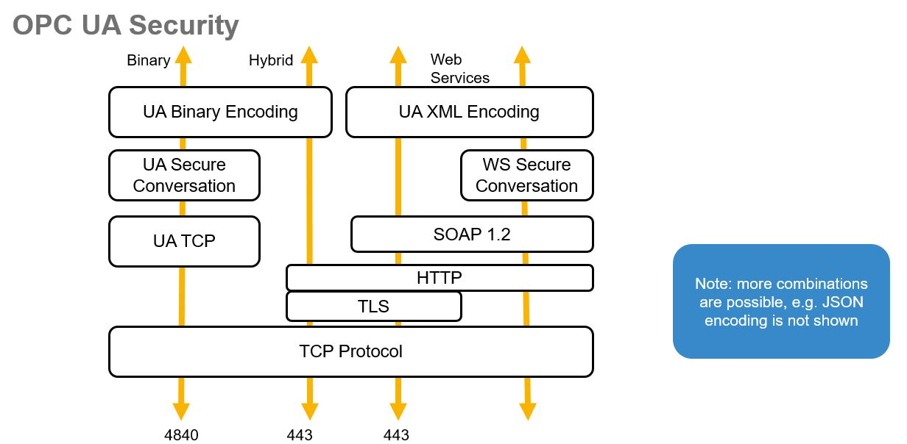
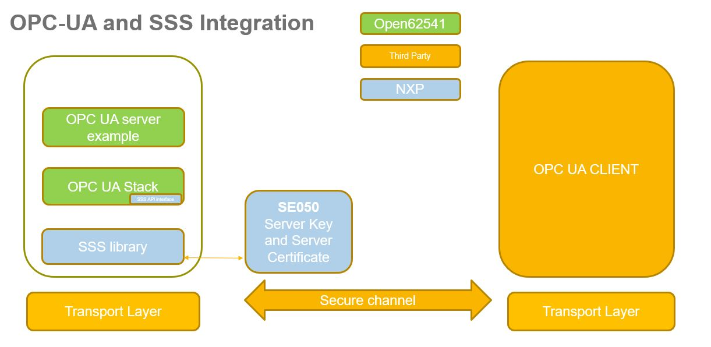

5.13. OPC UA (Open62541) Demo¶
5.13.1. Supported Platforms¶
Server Platform
Windows – JRCPv2 – SE050
iMX6 / RaspberryPi - t1oi2c – SE050
Client Platform
UaExpert on Windows
Open62541 client on Windows
Open62541 client on iMX6 / RaspberryPi
5.13.2. Introduction¶
OPC UA (Open Platform Communications Unified Architecture) is an application layer protocol specific to Industrial IoT.
It can run on top of TCP, TCP + Web services or TCP + HTTPS.
In this client - server demo, the Open62541 open source OPC UA stack is used for integration with SE050.
The server certificate and key are provisioned inside the SE050, the access to the SE050 is is performed using the SSS APIs.
The OPC UA server example source code is available in directory demos\opc_ua\opc_ua_server.
The Open62541 specific adaptation layer to the SE050 is available in directory sss\plugin\open62541.
The source code of the Open62541 stack is available in directory ext\open62541.
OPC UA stack:

In reference to the above image the demo matches the left arrow:
UA binary encoding is used
UA Secure conversation with security policy
Basic256Sha256andSign and Encrypt modeon top of TCP

The crypto functionality (as defined by Basic256Sha256) is handled as follows:
AsymmetricSignatureAlgorithm_RSA-PKCS15-SHA2-256: RSA Sign operation done by SE050
AsymmetricEncryptionAlgorithm_RSA-OAEP-SHA: RSA Decrypt operation done by SE050
Symmetric crypto operations are handled by the OPC UA stack on the host micro
5.13.3. Build Open62541 server and client examples¶
Build server and client example
cd simw-top python3 scripts/create_cmake_projects.py cd ../simw-top_build/imx_native_se050_t1oi2c cmake -DWithOPCUA_open62541:BOOL=ON -DHostCrypto:STRING=MBEDTLS . cmake --build . make install ldconfig /usr/local/lib
Note
Replace imx_native_se050_t1oi2c with raspbian_native_se050_t1oi2c
when building for Raspberry Pi.
Server and client binaries are copied to the simw-top/tools folder
5.13.4. Test Open62541 server and client examples¶
Client/Server keys are available in
simw-top\demos\opc_ua\credentials\. Optionally you can regenerate the client/server keys with the following commandcd simw-top/demos/opc_ua/scripts python3 createOPCUACredentials_Optional.py OPU UA mandates the host name to be part of the subjectAltName in the server certificate. The default server certificate provided with the package uses hostname 'localhost'. To create a completely new set of credentials with a specific server hostname / ip-address run createOPCUACredentials_Optional.py script as python3 createOPCUACredentials_Optional.py <server_hostname> # Default <server_hostname> = localhost
Refer to CLI Tool for pyCLI tool setup. Using pycli tool, provision server certificate and key into SE050 and create a reference pem file for server key
cd simw-top/demos/opc_ua/scripts python3 provisionOPCUAServer.py 127.0.0.1:8050 jrcpv2 #On Windows OR python3 provisionOPCUAServer.py #On iMX6 / RaspberryPi
Start opc ua server
cd simw-top/demos/opc_ua/scripts python3 open62541Server.py jrcpv2 127.0.0.1:8050 <certificate> #On Windows OR python3 open62541Server.py <certificate> #On iMX6 / RaspberryPi When using Open62541 client: <certificate> is located at simw-top\demos\opc_ua\credentials\open62541_client_cert.der When using UAexpert client: <certificate> is located at uaexpert\PKI\own\certs\uaexpert.der Passing "none" for <certificate>, will make the server accept all client certificates.Start opc ua client
cd simw-top/demos/opc_ua/scripts python3 open62541Client.py opc.tcp://127.0.0.1:4840 On successful connection, value of the object "Sensor1" is read from server and displayed.
UaExpert client can also be used to test the Open62541 server.
For testing with UaExpert client, root certificate needs to be copied to UaExpert trusted list of certificates,
Go to UaExpert -> Settings -> Manage Certificates -> Trusted (Tab) -> Open Certificate Location and copy the file
simw-top\demos\opc_ua\credentials\open62541_rootCA_cert.der- Also disable following errors in UaExpert configurations.
UaExpert -> Settings -> Configure UaExpert -> General.DisableError.CertificateIssuerRevocationUnknown -> true
UaExpert -> Settings -> Configure UaExpert -> General.DisableError.CertificateRevocationUnknown -> true
- Add the server details to connect. UaExpert -> Server -> Add -> Advanced (Tab). Add details in
EndPoint Url (opc.tcp://<SERVER_IP>:4840/)
Security Policy as Basic256Sha256
Message Security Mode as Sign & Encrypt
Added server will appear in project tab. Right click on server -> Connect.
On successful connection, the client objects should appear in UaExpert address space.
To change the value of object “Sensor1”, select the object “Sensor1” in address space. In the Attribute section, select “value” attribute and enter the new value.
5.13.5. Known Limitations¶
Client certificates are self signed certificates. Not tested with root ca signed.
No root certificate can be given as input to command line Open62541 client. So any server certificate is accepted.